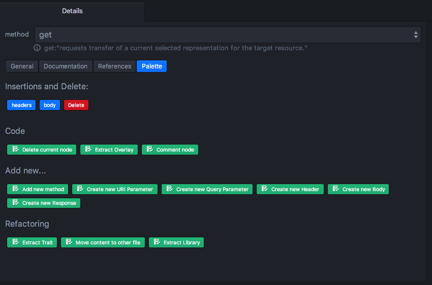
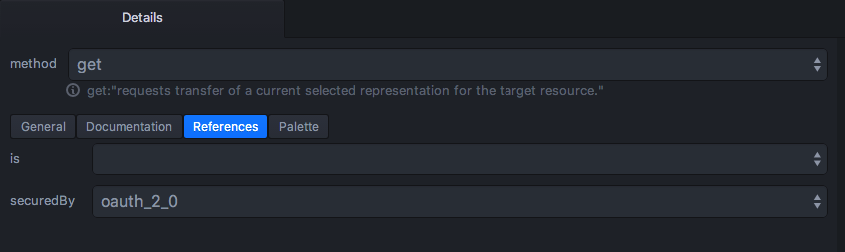
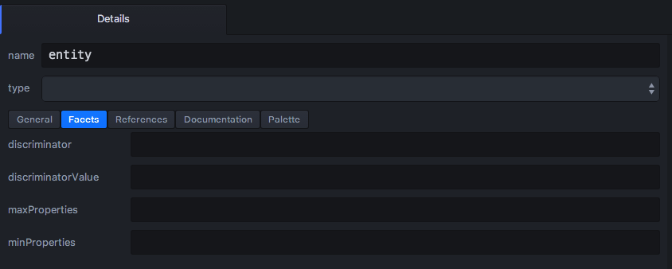

- Getting Started
- Code Completion
- General API Workbench Functionality
- Navigation
- Outline and Details
- Validation
- Wizards
Outline and Details
Outline and Details panes located to the right provide user with context-depended information. Each time user changes cursor position in the editor, contents or selection of those panes changes to reflect the current node properties.
These panes are great to navigate current file, easily see code structure at a glance, quickly modify properties and add children. Details pane also serve as a central place to find context-depended actions along with context menu.
Outline tree

This pane displays the filtered tree of RAML nodes. This does not mean it displays all YAML nodes, instead YAML nodes are divided into RAML nodes and RAML properties. Only RAML nodes are displayed in the tree.
Clicking on a node reveals it in the editor and also makes Details pane to display node properties.
Clicking on an arrow element to the left of the node reveals its children.
The Outline pane tabs apply filters to the whole RAML tree contents to reduce clutter. Following tabs are available:
- Resources - displays resources, methods and method contents.
- Schemas & Types - displays user-defined schemas and types.
- Resource Types and Traits - displays resource types, traits, and their contents.
- Other - displays all other nodes.
Outline may display children that are not directly located in the current node, but also the ones that are inferred from the other parts of the code.
Quick Outline

Ctrl+O keyboard shortcut displays a pop-up version of outline for quick navigation.
Node Details

Details pane displays the properties and actions for the currently selected node. Most of the properties are editable, so this may be one of the easiest way for a user to discover and edit node properties.
The pane contents heavily depends on the current node.
Following tabs are available:
General
Details pane contents above the tabs and the General tab contents usually display a few of the most important properties of the node.
All property changes are immediately applied to the editor. All the changes from the editor are immediately reflected in the Details pane.
Palette

This tab contains actions that may be applied in the context of this node.
Following categories of actions are available:
- Insertions and Delete - completion based simple actions, which delete current node, or insert a simple empty child.
- Add new… - wizards, which pop up a dialog allowing to add a complex child and fill in some of its values or even children.
- Code - general code manipulations.
- Refactoring - code manipulations that transform current code.
References

Allow to reference resource types, traits and schemas.
Documentation

Displays current node documentation, and provides documentation editor.
Facets

This tab is only available for types and elements declaring an in-place type.
It lists all the type facets and allows changing facet values.
Tree View

This tab is only available for schemas.
It displays the schema as a tree.
Text View

This tab is only available for schemas.
It displays the schema as text.